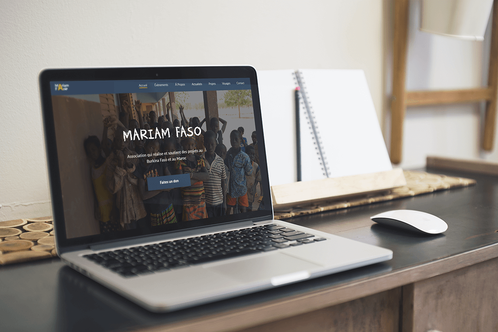
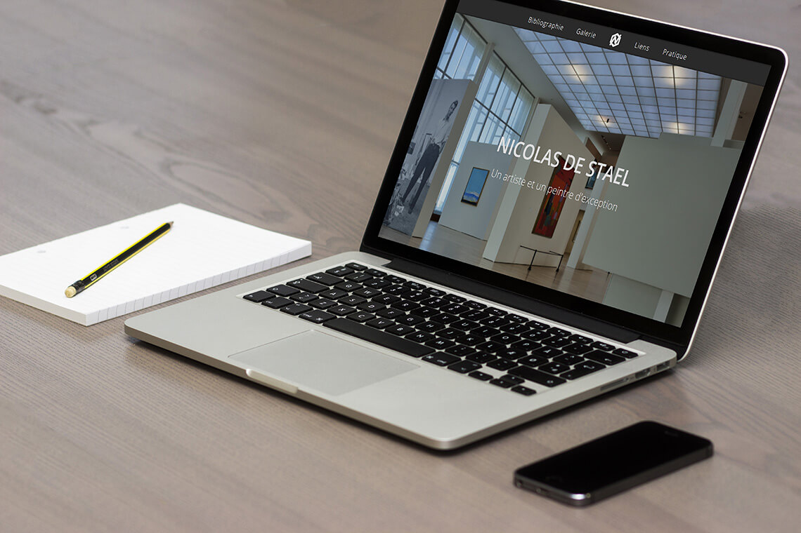

Projets
Navigation principale
Accueil
Réalisations
Voir mon cv
Tous mes projets

Mariam-Faso
Site réalisé pour l'ASBL Mariam-Faso
Vers le projet

L'artiste
Site du peintre Nicolas De Stael
Vers le projet
Mariam-Faso
Site réalisé pour l'ASBL Mariam-Faso
Vers le projet